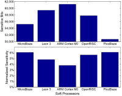
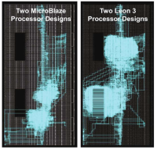
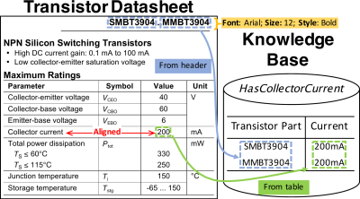
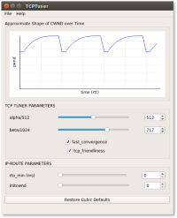

I’m a third-year electrical engineering Ph.D. student at Stanford University interested in embedded systems, security, networking, and IoT. While an undergraduate, I focused on digital systems and embedded hardware and software. Now, I work with Phil Levis on systems for making embedded system design easier.
Education
| 2015 - Present |
Ph.D. in Electrical Engineering Stanford University |
| 2015 - 2017 |
M.S. in Electrical Engineering Stanford University |
| 2010 - 2015 |
B.S. in Computer Engineering Brigham Young University Graduated Summa Cum Laude , GPA: 4.0 |
Research Experience
| Sept 2015 - Present |
Stanford Univerisity, PhD Student Researcher Advisor: Prof. Phil Levis and Prof. Mark Horowitz Area: Design Productivity, Embedded Systems, Networking, Security |
| Apr 2014 - June 2015 |
Brigham Young University, Undergraduate Research Assistant Advisor: Prof. Mike Wirthlin Area: Embedded Systems, FPGA Reliability, Fault Injection |
Industry Experience
| June 2017 - Sept 2017 | NVIDIA, Software Engineering Intern |
| Apr 2015 - June 2015 | Novi Security, Software Engineering Intern |
Publications
Workshop, Symposium, and Short Papers
|  |
Estimating Soft Processor Soft Error Sensitivity through Fault Injection N. Harward, M. Gardiner, L. Hsiao, and M. Wirthlin FCCM 2015 [W1] [abs] [pdf] |
|  |
A Fault Injection System for Measuring Soft Processor Design Sensitivity on Virtex-5 FPGAs N. Harward, M. Gardiner, L. Hsiao, and M. Wirthlin FASA 2014 [W2] [abs] [pdf] |
Preprints
|  |
Fonduer: Knowledge Base Construction from Richly Formatted Data S. Wu, L. Hsiao, X. Cheng, B. Hancock, T. Rekatsinas, P. Levis, and C. Ré arXiv 2017 [P1] [abs] [pdf] |
Software
|  |
TCPTuner: Congestion Control Your Way K. Miller and L. Hsiao SU 2016 [S1] [abs] [pdf] [code] |
Teaching Experience
| W2016 | Program Analysis and Optimizations (CS 243), Graduate TA |
| W2014 | Data Structures and Algorithms (CS 235), Undergraduate TA |
Stanford Graduate Coursework
| F2015 | Computer Networking (CS 144), P. Levis and N. McKeown |
| W2016 | Program Analysis and Optimizations (CS 243), M. Lam |
| W2016 | Network Application Studio (CS 344G), K. Winstein |
| Sp2016 | Computer Systems Architecture (EE 282), H. Litz and C. Delimitrou |
| Sp2016 | Computer and Network Security (CS 155), D. Boneh and J. Mitchell |
| Su2016 | Linear Dynamical Systems (EE 263), A. Momeni |
| F2016 | Advanced Multi-Core Systems (CS 316), C. Kozyrakis |
| F2016 | Embedded Systems Workshop (CS 241), P. Levis |
| W2017 | Introduction to Cryptography (CS 255), D. Boneh |
| W2017 | Database System Principles (CS 245), P. Bailis |
| Sp2017 | Advanced Topics in Networking (CS 244), K. Winstein and S. Katti |
| Sp2017 | Parallel Processors Beyond Multicore Processing (EE 382A), A. Blas |
Recent Blog Posts
| ReBBR - Reproducing BBR Performance in Lossy Networks | June 18, 2017 |
| Fonduer - Knowledge Base Construction from Richly Formatted Data | March 16, 2017 |
| Stanford EE Quals Resources | February 3, 2016 |
View all
Side Projects
- CribSense: A contactless, video-based baby monitor. Built using video magnification on a Raspberry Pi.
- Stanford EE Quals Resources: Study materials focused on hardware/software areas for new EE students.
- Robot Soccer: Autonomous, custom-made striker used to win the BYU robot soccer competition.
- Bomberman: An interactive display to use for outreach, built with a Raspberry Pi and a MakeyMakey.
- Space Invaders: Implemented in C using a MicroBlaze softprocessor.
Last updated on 21 August 2017